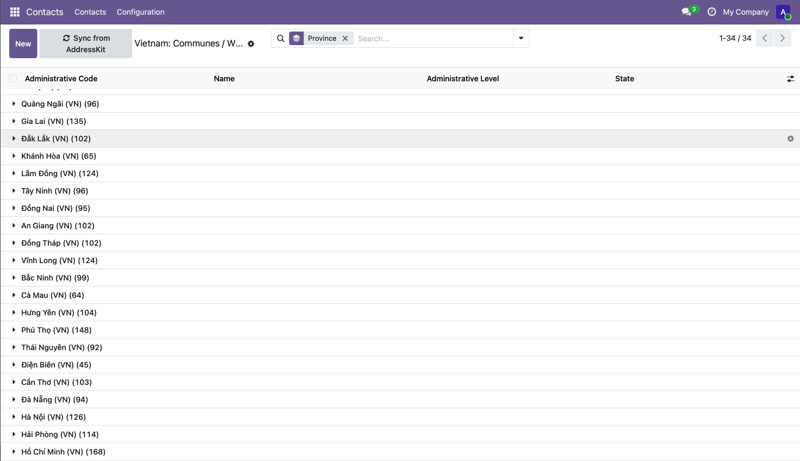
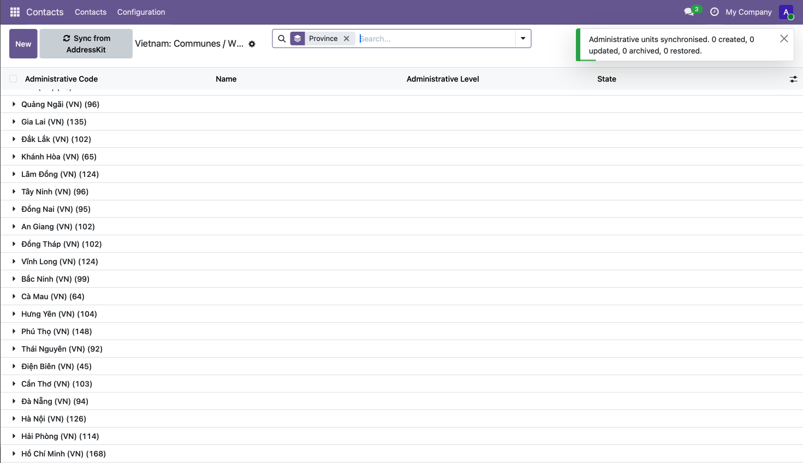
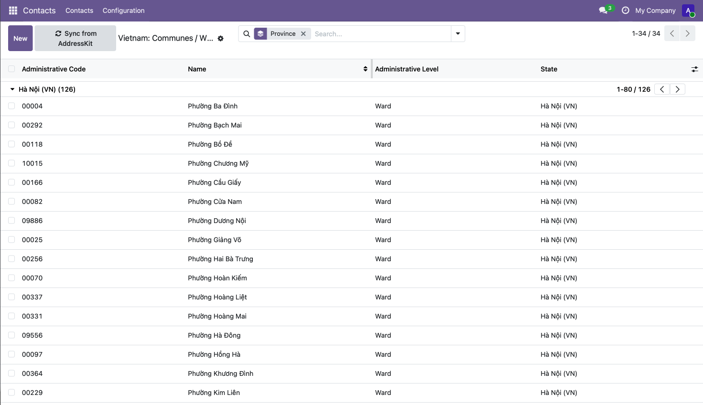

Administrators can refresh the list from Contacts/Configuration/Vietnam: Communes / Wards. The result shows how many units were created, updated, archived and restored.

Enable Enforce Cities on Vietnam (Contacts/Configuration/Countries) to select the commune or ward from the official list on every address.
